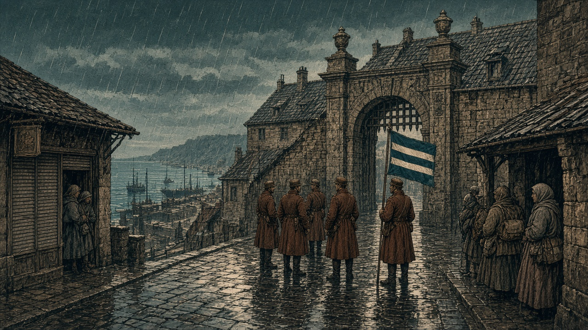

黒潮、首都を失う
ネルヴェナへ強制移住
首都(16, 12)はカペレナ領 無人だった村に住民400人 国内から批判

【総合部】黒潮自治国の首都(16, 12)は第133期、カペレナ王国の占領下になった。都市は残り、そこには10,800人が暮らしている。黒潮として数える人口は12,900人から2,200人になった。残る2,200人は、フィルノアの1,800人と、ネルヴェナの400人である。
前期、ネルヴェナの人口は0だった。最後の100人が艦砲で死亡し、潮見玄吾議長は彼らを「ネルヴェナ百烈士」と呼んだ。今期、その村に400人がいる。議長は国の方針として、国内の住民をこの村へ移した。
潮見議長「空き地のままにはしない」
議長の声明は、こう述べている。「百烈士が死んだ村を、空き地のまま冬へ渡してはならない。国の命により、住民をネルヴェナへ移す。住む者がいて、はじめてその土地は国の村であり続ける」。
第129期、同じ議長は評議会前で「私はここにいる。評議会も首都を離れていない。失った土地は必ず取り戻す」と述べた。今期、その首都は王国の旗の下にある。評議会の建物は残り、門の前に王国の兵が立つ。雨だった。
フィルノアで、批判が噴き出した
強制移住への批判は、残った現代都市フィルノアで大きくなった。人口1,800人のこの都市は曇りで、今期の艦砲は受けていない。
「死んだ村へ、生きている者を送り込むのか」。岸壁で荷を編んでいた女は、雨の方角を指した。「先週、あそこに100人がいた。今週、議長は別の400人を同じ屋根の下へ入れる。首都を失った週に、これが国の答えなのか」。
市場の男は、配給の列を離れなかった。「反対だと声を上げれば、次は自分の番だ。それでも言う。村を埋めることと、村を守ることは違う」。
移された側の荷物は少なかった。鍋、毛布、子どもの靴。壊れた家の前で、役人が名簿を読み上げ、家を割り当てた。割り当てを拒んだ男は、列の後ろへ戻された。
王国「臨時首都に突入」
カペレナ王国は「王国軍は黒潮臨時首都に突入南部戦線遂に突破し計画都市目前に迫る」と述べた。突入は、首都が王国領になったことと重なる。計画都市フィルノアは、なお黒潮が持っている。
陸上の戦果は双方1,800人。兵站基地も王国領になり、予備兵1,000人が投降した。詳報は2面。
泰平とアルガ、戦いが始まった
泰平天国とアルガリスト帝国の戦いは今期始まった。戦果は泰平6,600人、アルガ2,300人。3面。
港と町を、怪獣が踏んだ
なのです主義人民共和国の南の港をクジラが、北西の町をいのらが踏み荒らした。港と町は壊れ、二つの怪獣はそこにいる。4面。
教団へ、元の人口を超える人々
青海共和国から狐っ娘の尻尾教団へ、仕事を求める223,200人が到着し、教団は受け入れた。教団の前期の人口は160,000人で、到着した人数の方が多い。教団は繁栄賞、青海は災難賞を受けた。5面。
黒潮の首都(16, 12)はカペレナ王国領になった。都市の10,800人は、旗が替わった土地で暮らしている。
それでも首都を失った事実は重い。潮見玄吾議長は、首都を離れないと誓った人である。その首都は今、王国の兵が門に立つ。
同じ週、議長は無人だったネルヴェナへ400人を移した。百烈士の村を空き地にしない、という声明には、土地への執着がある。批判する側の言葉も、本紙は捨てない。死んだ場所へ生きている者を国の命で入れることは、国の政策である。政策である以上、拒む権利が要る。名簿の順で家を割り当て、拒んだ者を列の後ろへ戻すやり方を、本紙は批判する。
残る黒潮の人口は2,200人。フィルノアとネルヴェナだけである。この2,200人を、次の砲と次の命令から守る話が、声明より先に要る。